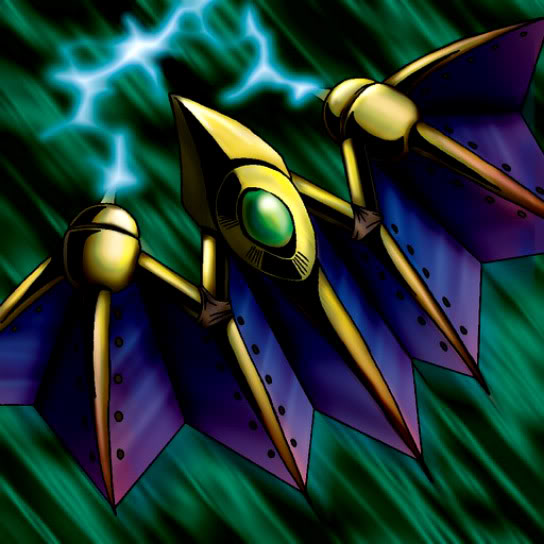

Bat

Description: "When this card is flipped face-up, if there's a Jigen Bakudan in any adjacent space, teleport 1 Jigen Bakudan to an opponent's summoning area."
STATS
ATK: 300
DEF: 350DECK COST
Deck Cost per Card: 12EFFECT NOT IMPLEMENTED
Fusion List (40 Possible Fusions)
- Bat + Air Marmot of Nefariousness = Giga-tech Wolf
- Bat + Anthrosaurus = Cyber Saurus
- Bat + Blackland Fire Dragon = Metal Dragon
- Bat + Burglar = Giga-tech Wolf
- Bat + Crawling Dragon = Metal Dragon
- Bat + Dark Gray = Dice Armadillo
- Bat + Darkfire Dragon = Metal Dragon
- Bat + Dragon Zombie = Metal Dragon
- Bat + Dragoness the Wicked Knight = Cyber Soldier
- Bat + Eyearmor = Cyber Soldier
- Bat + Greenkappa = Cyber Soldier
- Bat + Hane-Hane = Dice Armadillo
- Bat + Kageningen = Cyber Soldier
- Bat + Koumori Dragon = Metal Dragon
- Bat + Lesser Dragon = Metal Dragon
- Bat + Little Chimera = Giga-tech Wolf
- Bat + M-Warrior #2 = Cyber Soldier
- Bat + Mammoth Graveyard = Cyber Saurus
- Bat + Milus Radiant = Giga-tech Wolf
- Bat + Mushroom Man #2 = Cyber Soldier
- Bat + Mystic Lamp = Disk Magician
- Bat + Mystical Sheep #1 = Giga-tech Wolf
- Bat + Mystical Sheep #2 = Giga-tech Wolf
- Bat + One-Eyed Shield Dragon = Metal Dragon
- Bat + Petit Dragon = Metal Dragon
- Bat + Phantom Dewan = Disk Magician
- Bat + Queen's Double = Cyber Soldier
- Bat + Sectarian of Secrets = Disk Magician
- Bat + Silver Fang = Dice Armadillo
- Bat + Skull Stalker = Cyber Soldier
- Bat + Swordsman from a Foreign Land = Cyber Soldier
- Bat + Tomozaurus = Cyber Saurus
- Bat + Two-Headed King Rex = Cyber Saurus
- Bat + Two-Mouth Darkruler = Cyber Saurus
- Bat + Unknown Warrior of Fiend = Cyber Soldier
- Bat + Uraby = Cyber Saurus
- Bat + White Dolphin = Misairuzame
- Bat + Wicked Dragon with the Ersatz Head = Metal Dragon
- Bat + Wow Warrior = Misairuzame
- Bat + Yamatano Dragon Scroll = Metal Dragon